POP
CULTURE
SUPERHEROES MONSTERS & WASTELANDS
Radiation was scary to the public since its inception, but it was also romanticized in the name of entertainment.
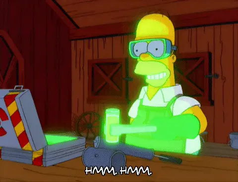
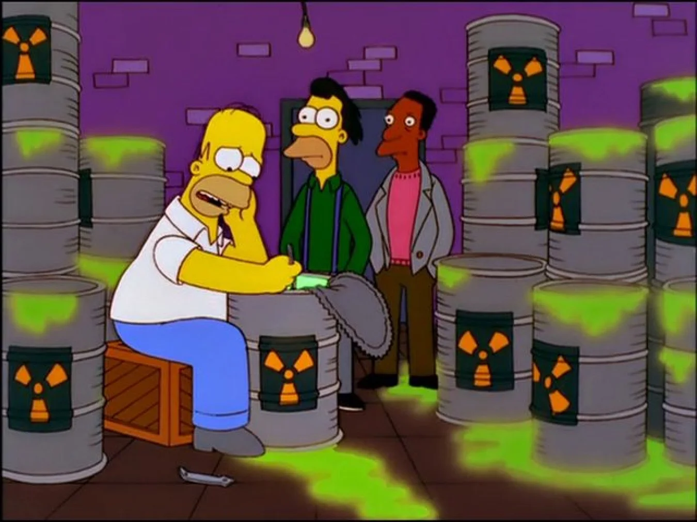
Simpsons heavy use of novelizing radiation
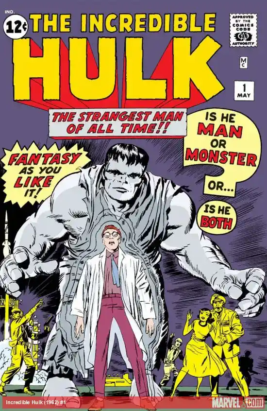
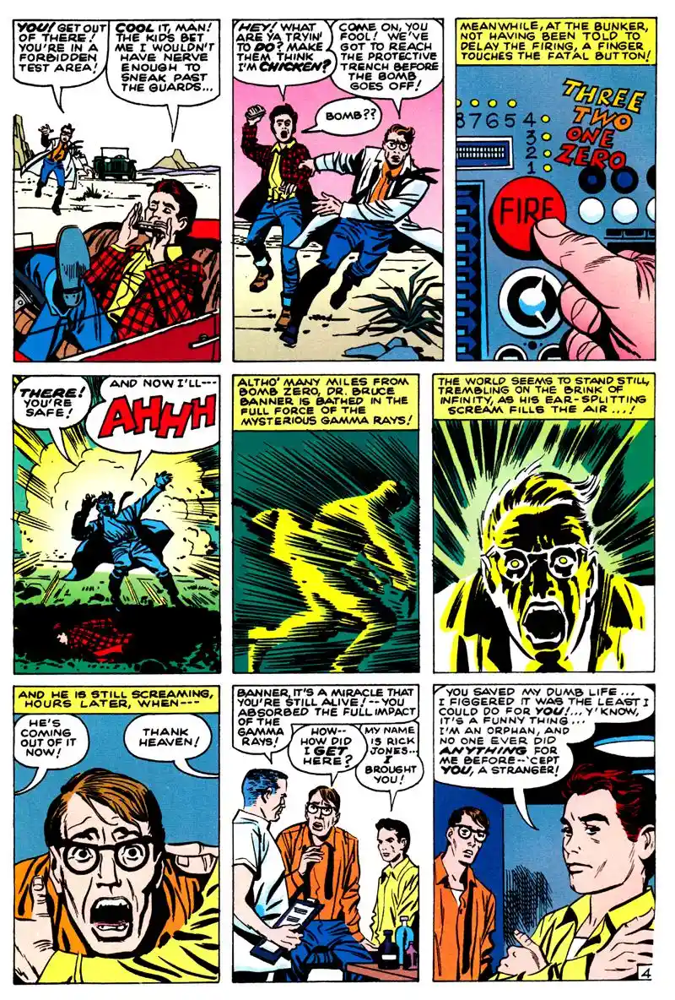
The Incredible Hulk #1, 1962
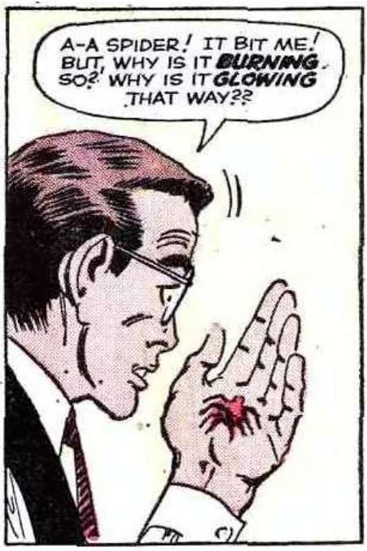
Amazing Fantasy #15, 1962
RAD ACTION
Characters like the Hulk and
Spider-man were quintessential pop-culture superhero icons that defined the use of radiation in science fiction.
Though Flash (1956, Barry Allen) and Superman (1938, Clark Kent) solidified science fiction in comic book media,
Radiation induced superpowers weren’t used in mainstream media until Stan Lee wrote the Hulk and Spider-man.
They saw their radioactive debuts in American publications.
Spider-man (1962, Peter Parker) saw his powers manifest from a spider dosed with ambiguous ionized radiation
all the way back in Amazing Fantasy #15.
Hulk (1962, Bruce Banner) saw his raging strength come from gamma radiation consuming his body mind and soul in
The Incredible Hulk #1.
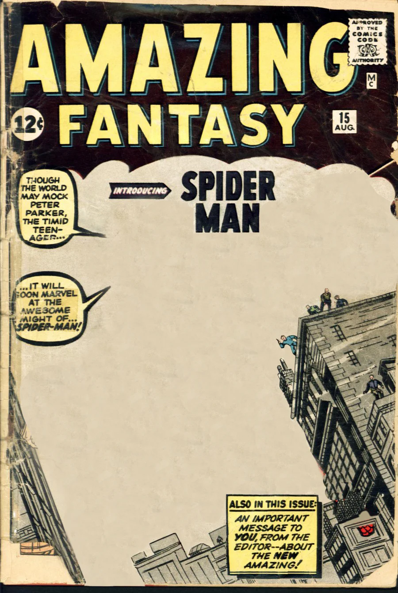
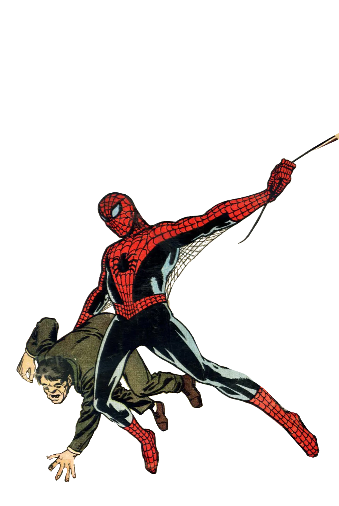
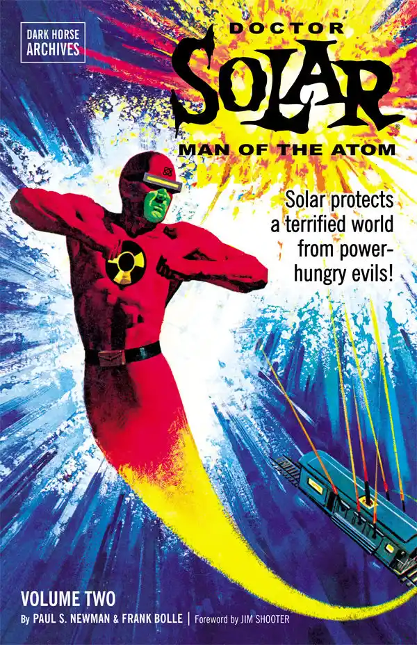
Doctor Solar
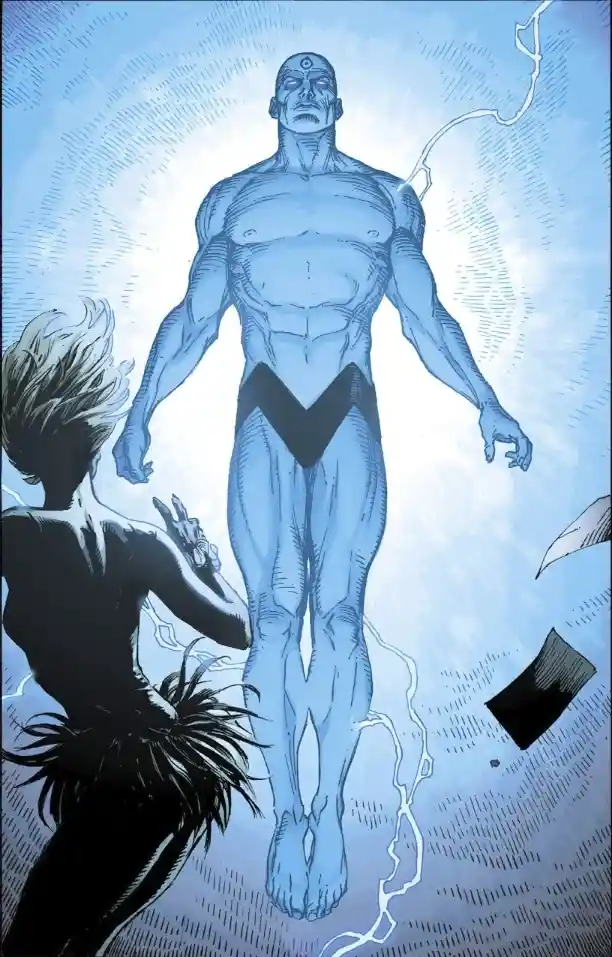
Doctor Manhattan
MONSTERS
Tomoyuki Tanaka, movie producer, conjured up the tale of Godzilla as a monster movie that cautioned against mankind’s
tendency to destroy itself with radiation and warfare.
Godzilla is a simple creature. A behemoth lizard that breathes radioactive fire and smashes apart cities like a Fat
Man bomb with arms and legs.
Godzilla has seen 39 movies alone as of writing this. His ability to keep pushing franchise materials is a testament
to mankind’s worries about how radiation, bombs and nature intermingle.
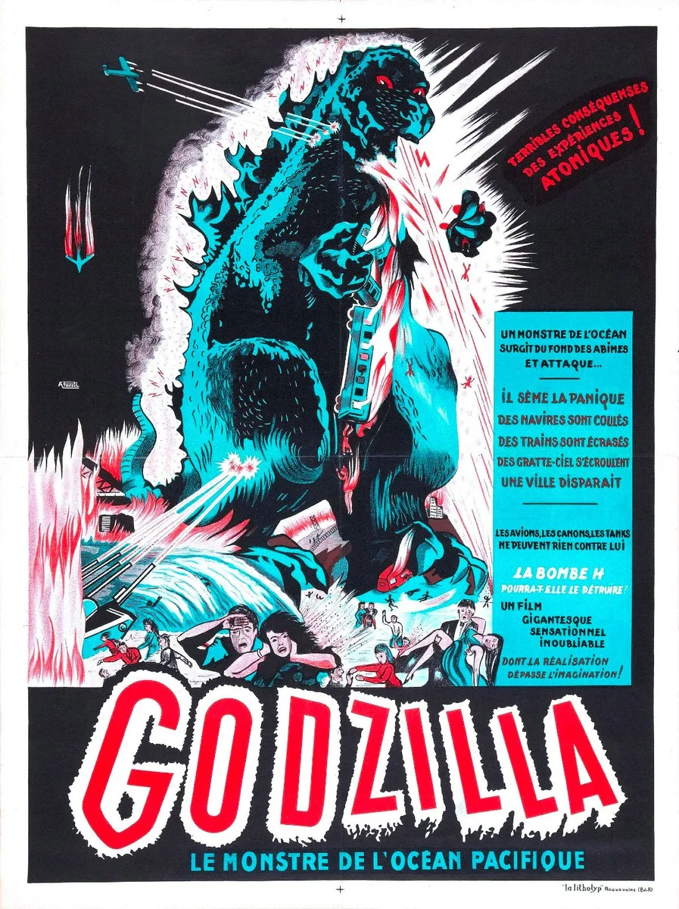
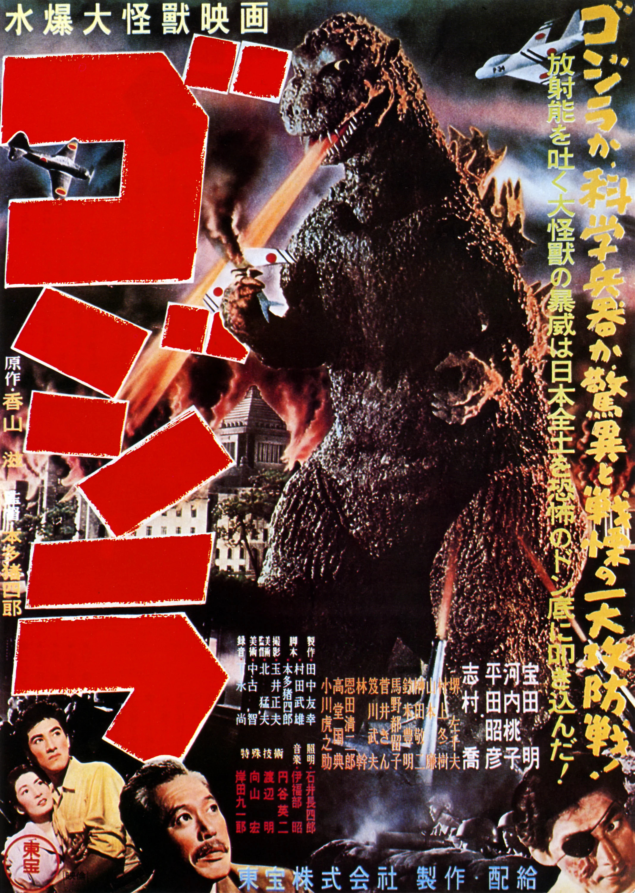
Godzilla was active since the 50s
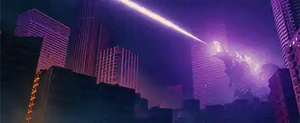
♪ RADIO-ACTIVE ♪
Radiation, Uranium, and atom bombs were always referenced in songs throughout the cold war.
These songs showed the human race’s will to still keep a sense of optimism, humor, and creativity
in a time defined by political conflict and consequences that could end the world.
“Uranium Rock” Warren Smith (1931)
“Uranium Fever” Elton Britt (1955)
“Uranium” Commodores (1955)
“Atom Bomb Baby” Fivestars (1957)
“Radioactive Mama” Sheldon Allman (1960)
“Love That Bomb” Dr. Strangelove (1964)
"Radioactivity" by Kraftwerk (1975)
“Atom Bomb” Glenn Barber (1986)
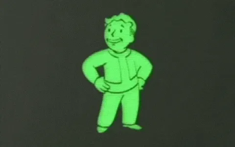
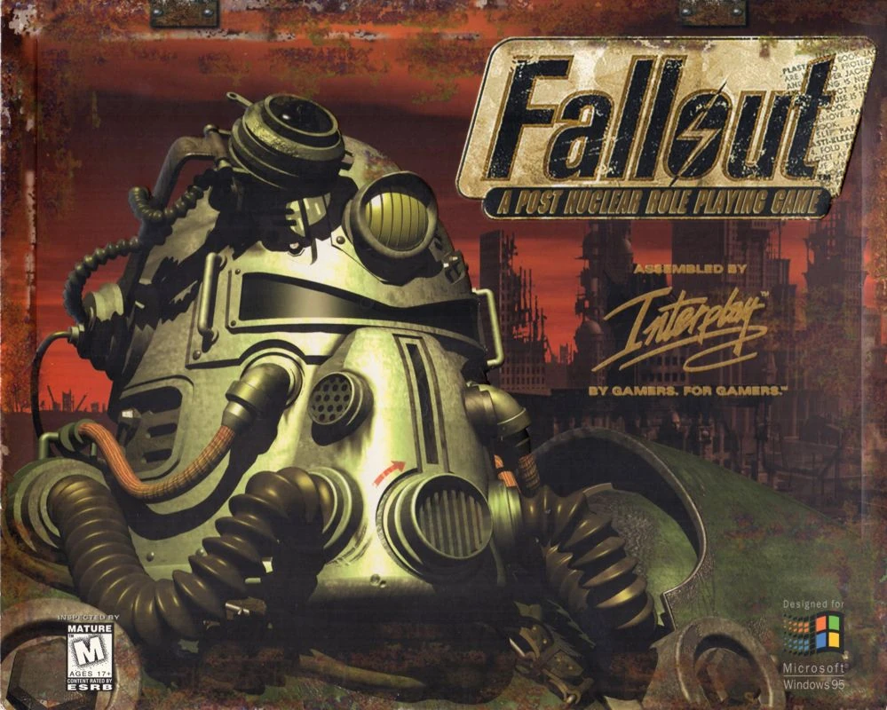
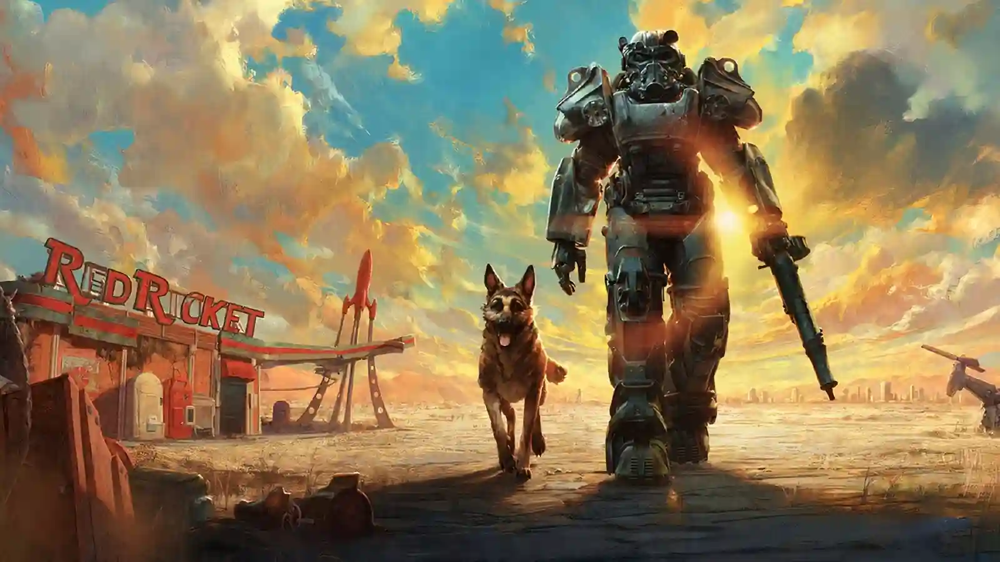
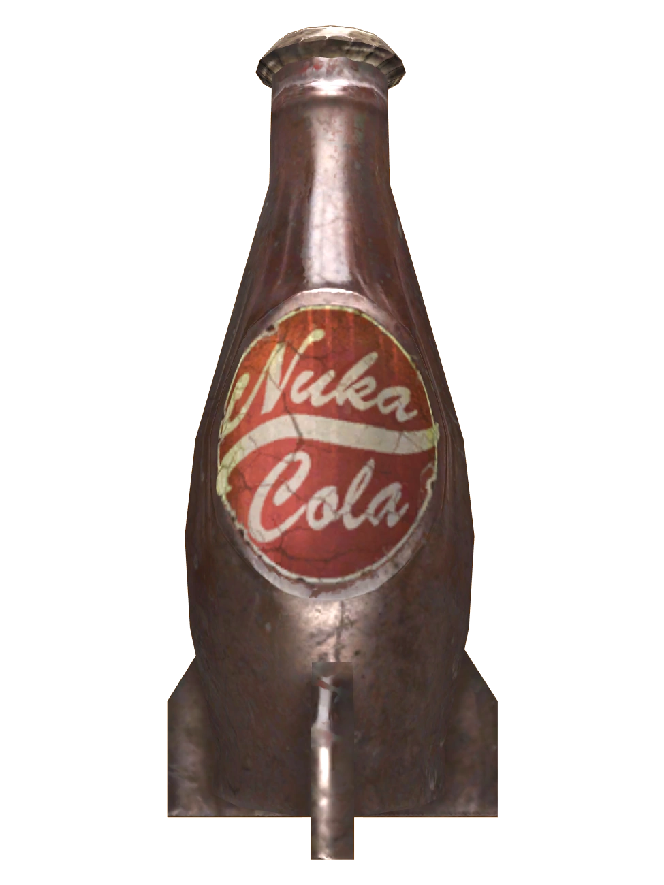
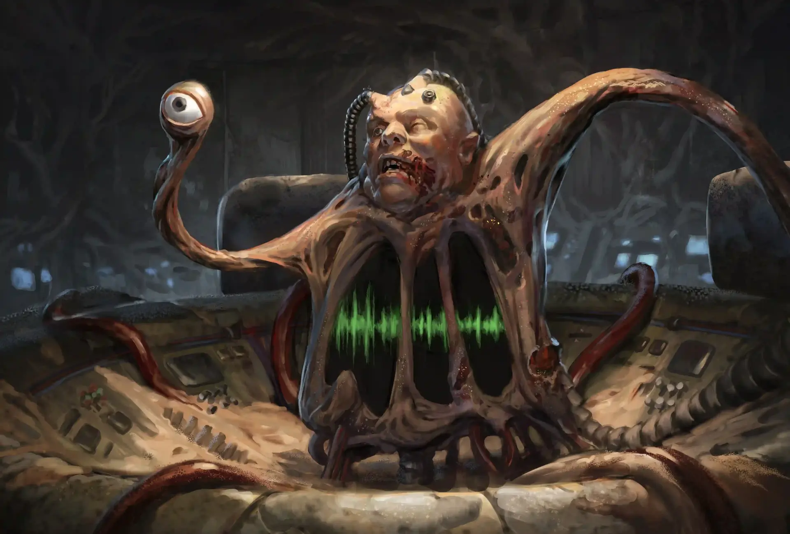
Fallout: A Post Nuclear Role Playing Game
RAD GAMES
In 1997, Interplay studios produced Fallout, the post apocalyptic RPG.
This game combined the 1950s atomic age aesthetic with wasteland iconography to deconstruct optimistic attitudes about atomic progress, war, and technological idolatry.
The game is set in an alternate earth where radiation based tech advanced fast in the United states, yet at the sacrifice of america’s integrity and benevolence. The post nuclear wasteland keeps reminding the player of the horrors of radiation.
You manage radiation along with your hunger and health, fight off radioactive mutants, and see cults form around technology and radiation.